In photography you can find different styles to experiment with. All the styles have a unique and different characteristics, techniques, and purposes. Photographers often specialize in one or more styles, allowing them to explore their creativity and express their unique perspectives through their work. This page explains six popular different photography styles that you can try to see which one you prefer and feel comfortable with.
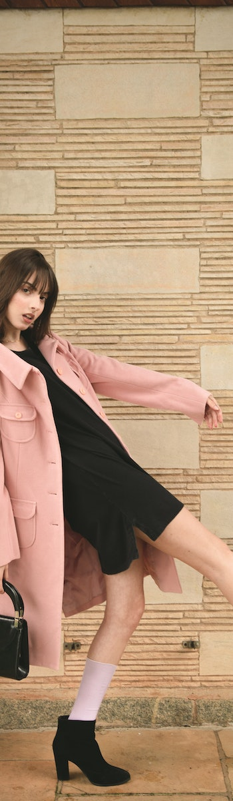
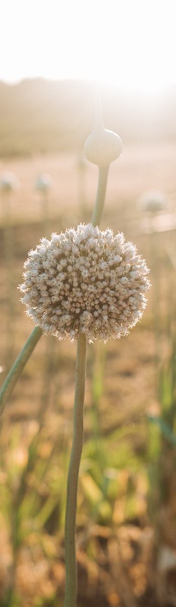
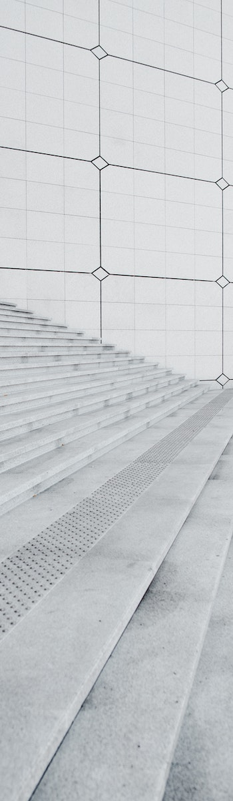
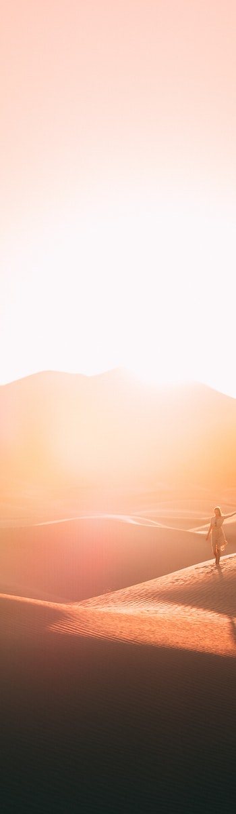
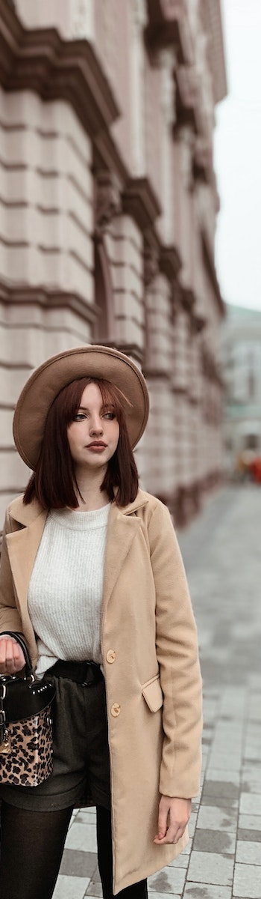
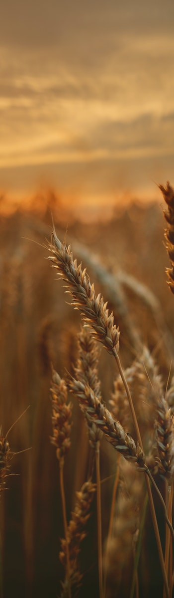
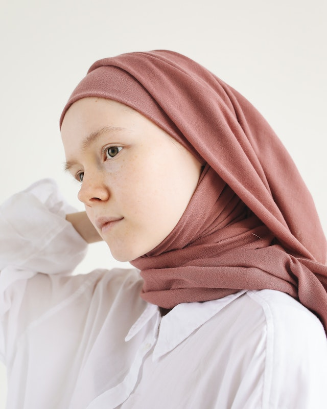
Portrait Photography
Portrait photography is a genre that focuses on capturing the essence, personality, and emotions of individuals or groups. The aim is to create a visual representation that goes beyond a mere likeness and delves into the depths of the subject's character and inner world. It is a form of storytelling through images, highlighting the unique qualities and narratives of the individuals being photographed. The key to successful portrait photography lies in building a connection and establishing trust with the subject. Skilled portrait photographers have the ability to put their subjects at ease, allowing their genuine personalities to shine through.
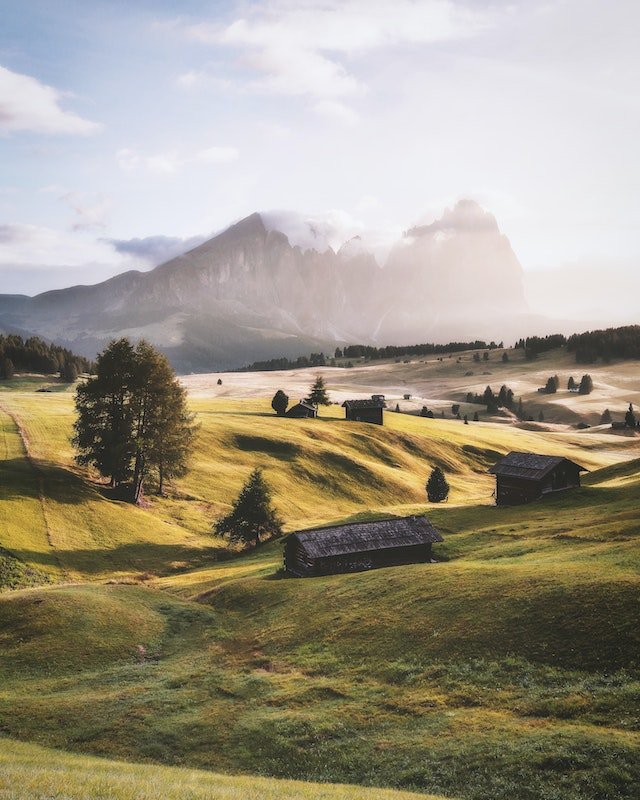
Landscape Photography
Landscape photography is a captivating genre that focuses on capturing the beauty and grandeur of natural environments. It involves capturing vast landscapes, breathtaking vistas, and the intricate details of the natural world. The aim is to showcase the beauty of the Earth's landscapes and evoke a sense of awe and appreciation in the viewer. Composition plays a vital role in landscape photography, as photographers carefully frame their shots to create visually pleasing and balanced images. In landscape photography, patience and timing are key. Photographers often wait for the perfect moment to capture the ideal lighting conditions or dramatic weather phenomena such as storms, fog, or vibrant sunsets.
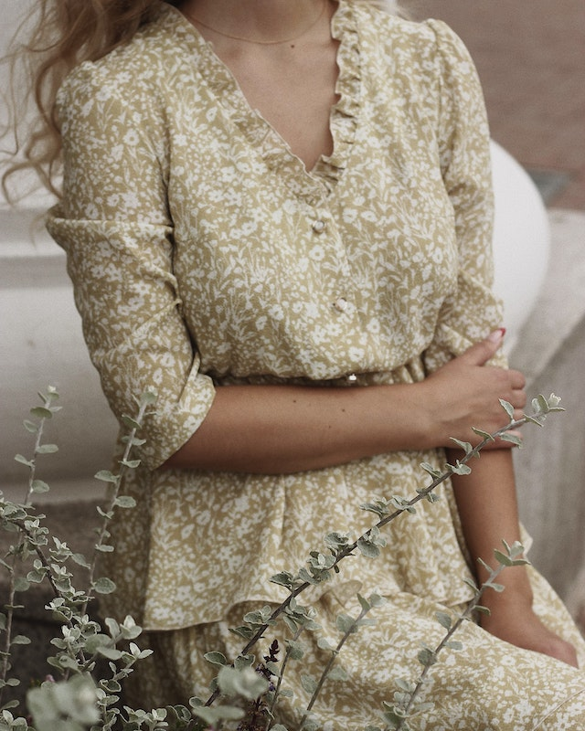
Fashion Photography
Fashion photography is a dynamic and visually striking genre that showcases clothing, accessories, and fashion trends. It is a collaboration between photographers, models, stylists, makeup artists, and designers to create captivating images that promote brands, convey a particular aesthetic, and evoke emotions in viewers. In fashion photography, the primary focus is on the garments and accessories, which are presented in a visually appealing and aspirational manner. The images often aim to captivate the viewer's attention, spark desire, and convey a sense of style and luxury.
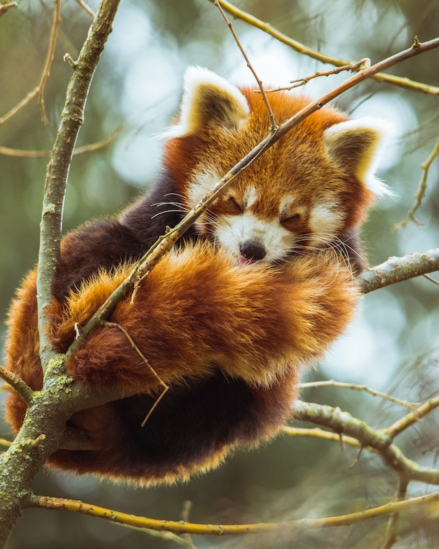
Wildlife Photography
Wildlife photography is a captivating genre that focuses on capturing animals in their natural habitats. It offers a glimpse into the fascinating world of wildlife, showcasing the beauty, diversity, and behaviors of animals in their natural environment. Wildlife photographers play a crucial role in documenting and raising awareness about the importance of conservation and the need to protect these incredible creatures.
Patience and observation are key skills in wildlife photography. Photographers spend hours, days, or even weeks in the field, waiting for the perfect moment to capture a compelling image.
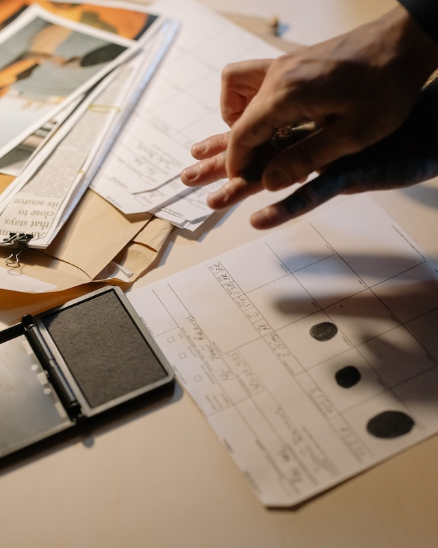
Documentary Photography
Documentary photography is a powerful form of visual storytelling that aims to capture real-life situations, events, and people. It goes beyond mere aesthetics and delves into the realms of social, cultural, or historical documentation. The purpose of documentary photography is to shed light on untold stories, raise awareness, provoke thought, and evoke emotional responses in viewers.
In documentary photography, authenticity and honesty are paramount. Photographers immerse themselves in the subject matter, often spending extended periods of time with the individuals or communities they are documenting.
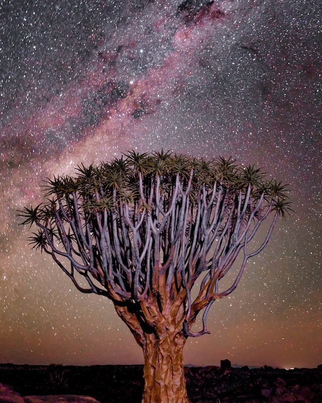
Astrophotography
Astrophotography is a captivating genre that involves capturing images of celestial objects, astronomical phenomena, and the vast expanse of the night sky. It allows us to explore and appreciate the beauty, grandeur, and mysteries of the universe that are often unseen by the naked eye.
Astrophotography requires specialized equipment, technical knowledge, and careful planning. Photographers use cameras, telescopes, and various accessories to capture the faint light emitted by stars, planets, galaxies, and other celestial objects.
How To Find Your Style
To find your style of photography try experimenting with the six provided and stated above. Research more on how to achieve them. Try perfecting or finding which ones are comfortable for each of the styles. Furthermore, you can reflect and try to understand what kind of photographic intentions you may have when taking your images. What is important is to find a style that you are fond of no matter what other may think of it. Also, make sure never to give up even if you think your artwork isn't good enough for the specific style. It is important to practice the styles and understand more on them before reaching perfection.